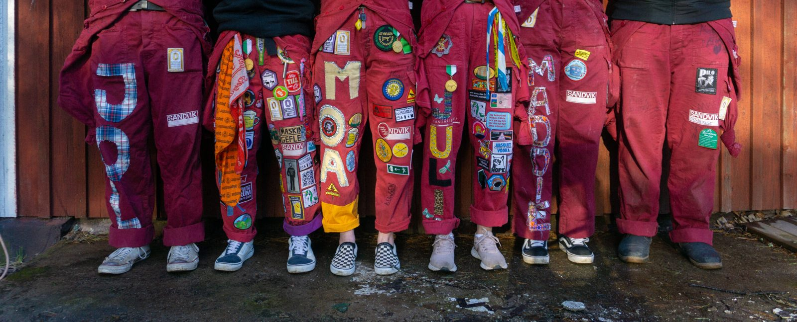

Gefleteknologerna
För Phaddrar
Har du planerat att delta på insparken men har en fråga, läs här först:

När anmäler jag mig?
Anmälan finns på instagram och hitract under april. Man anmäler sig och får efter ansökningsperioden ett mail med mer information.
Jag har anmält mig som phadder men har fått förhinder, hur gör jag?
Det är såklart jättetråkigt att du har fått förhinder men det är jätteviktigt att du meddelar det till de som är ansvariga. Kontakta alderman@gefleteknologerna.se eller sexmasteriet@voxhig.se.
Jag kan inte vara med på Phadderutbildningen, kan jag vara med ändå?
Nej, om du inte kan vara med på den obligatoriska Phadderutbildningen 17 augusti kommer du inte kunna vara med på insparken. Det gäller oavsett vilken roll du söker.
Jag har ingen ovve, hur gör jag?
Det kommer vara möjligt att köpa en ovve innan insparken för 602 kr. Även en invigning kommer att hållas innan insparkens början.
Jag vill vara i samma grupp som min kompis. Går det att ordna?
Ja, i anmälan kan man skriva namnet på en kompis som man vill vara i samma grupp som. Det går endast att önska en person och vi tar inte hänsyn till grupper som försöker önska i cirkel.
Jag vill vara i samma grupp som min partner. Går det att ordna?
Nej, om du och din partner önskar varandra kommer ni inte att hamna i samma grupp. Vi rekommenderar att ni önskar någon annan.
Vad kostar det att vara phadder?
Som Phadder måste du vara medlem i kåren och du måste köpa ett insparksband. Detta blir en summa på minst 500 kr.
Medlemskap: från 249kr
Insparksband: 200kr
Jag jobbar under insparksveckan och kommer inte kunna vara med så mycket. Kan jag vara phadder ändå?
Du kommer inte behöva vara med alla dagar om du inte har möjlighet. Det viktiga är att du informerar ansvariga übrar och de andra phaddrarna i din grupp vilka dagar du inte kan delta.
Jag har aldrig jobbat på trossen innan, hur går det till?
Under veckan kommer alla phaddrar att jobba minst ett arbetspass på trossen eller på kåren. Schema för vem som jobbar när kommer komma ut innan veckans start. Du kommer samma dag som ditt arbetspass att få information om arbetspasset och på plats kommer du att få all information som du behöver från ansvariga übrar. Du kommer även att få önska vilken position som du vill jobba på.
Jag har aldrig varit Phadder förut, hur går det till?
Du anmäler dig som phadder via formuläret och kommer efter anmälningsperioden att få ett mail med bekräftelse. Ett informationsmöte kommer att hållas under våren där du får all information du behöver inför veckan, du kommer att få veta vilken grupp du kommer att tillhöra och du kommer att få veta vad din roll som phadder är. Under sommaren kommer du och din grupp att planera ert tema och möjliga spex. Den 17 augusti är det en obligatorisk phadderutbildning som gefle studentkår håller tillsammans med skolan. Där deltar alla phaddrar och fogdar från alla föreningar och man får veta mer om sin roll som fadder. Under veckan kommer mycket information från übrarna i en facebookgrupp som skapas.
Det kommer att bli en jätterolig vecka och vi ser fram emot att ha dig med!